Mesh Deform
A procedural mesh generation tool for custom meshes on all Spline plus branches.
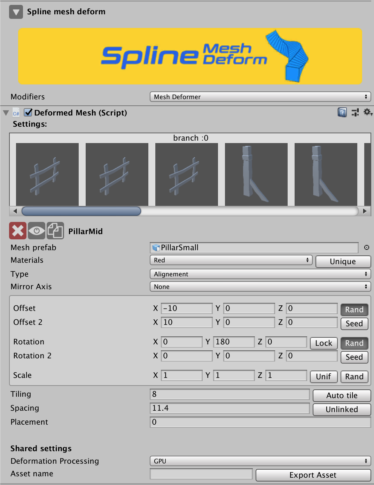
Settings
Branch
| Variables | Description |
|---|---|
| Prefab meshes area | 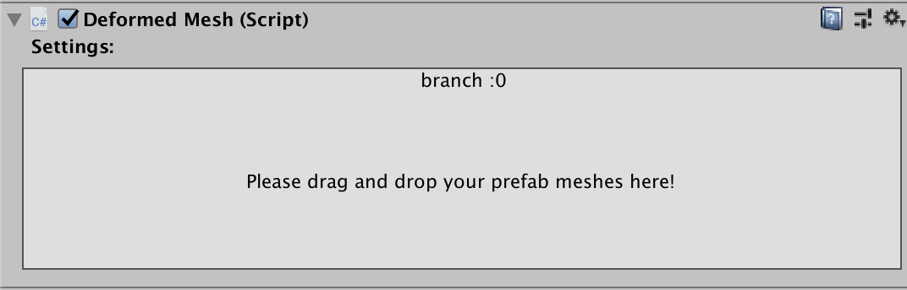 This contains the list of prefab meshes which user drag from the project window, the area is used to organize the meshes combination process, each prefab mesh “Mesh” has its own settings listed below,For each branch there is new prefab meshes list,so once you change branches selection you will see that the prefab meshes list changes as well, Ps :Meshes need to be dragged from the project window and dropped into the prefab meshes area. Select prefab mesh: each prefab mesh is represented in the prefab meshes area with a selectable prefab texture button, Click on the prefab mesh texture button to select the desirable prefab mesh. 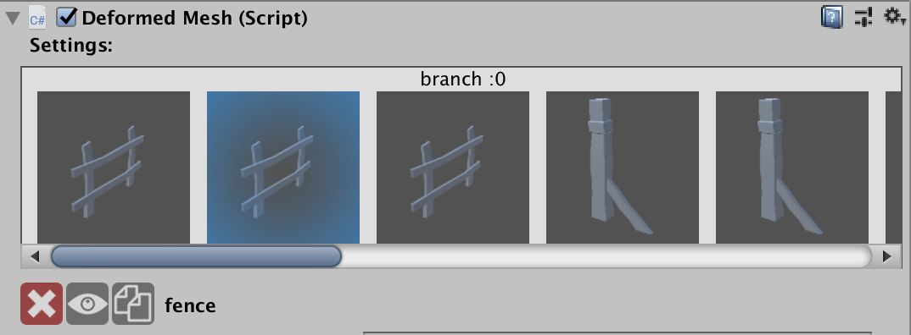 |
Prefab Mesh
| Variables | Description |
|---|---|
 |
Delete the selected prefab mesh |
| Hide/unhide the selected prefab mesh. | |
| Duplicate the selected prefab mesh. | |
| Prefab mesh name | It usually receives the prefab name but it can be edited to whatever value you want, just click on the text area and start typing for editing. |
| Materials | Material section for the selectable prefab mesh.Spline mesh deform supports multiple materials.You can add the selected prefab mesh material to the materials list by setting unique to true,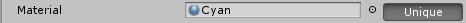This will add the selected prefab mesh material to the materials list so it can be reused by other prefab meshes. The list contains all the unique materials that will be found in the final mesh. 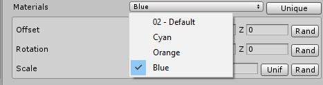 This will optimize performance by not having duplicate materials in your final mesh. |
| Type | Currently there are two types supported , Alignment: this aligns the meshes along the spline branches without performing a deformation, Deformation: this alings the meshes along the spline branches and perform deformation as well, |
| Mesh trim | Used to define the extensions of a deformed mesh when exceeding the branch distance limit, this appears only if you are using deformation, available options: None, Left, Right, Both  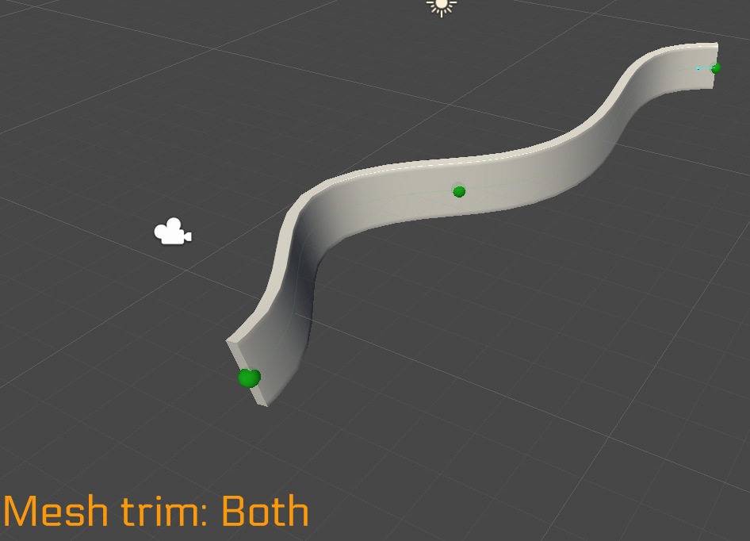 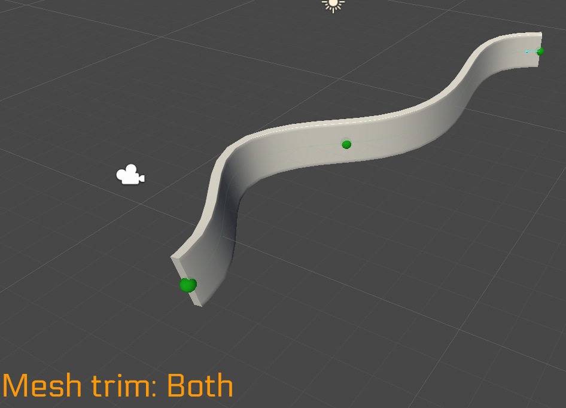 |
| Mirror axis | Used to create a mirror effect on a defined axis, you can use rotation and translation to create a mirroring offse 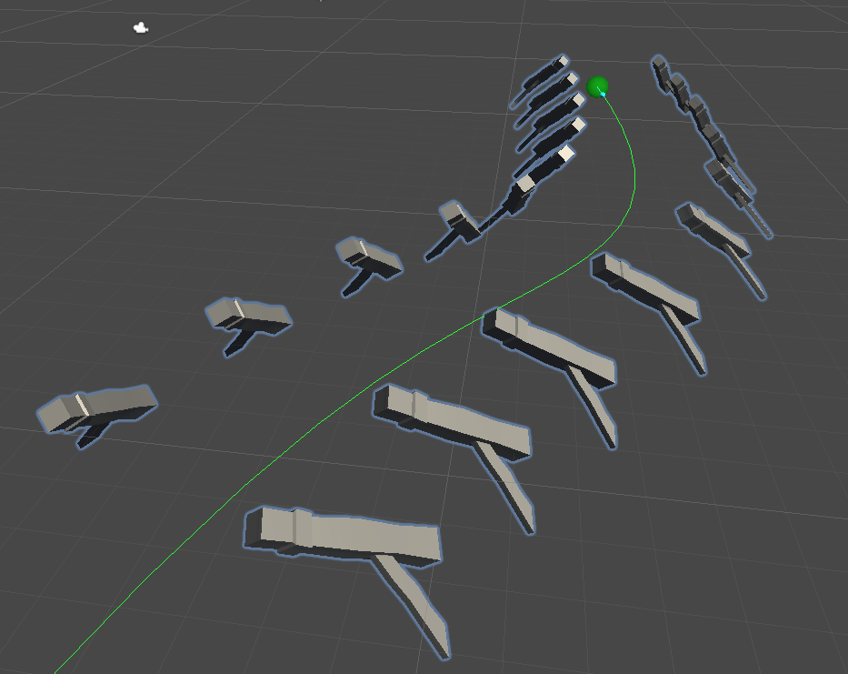 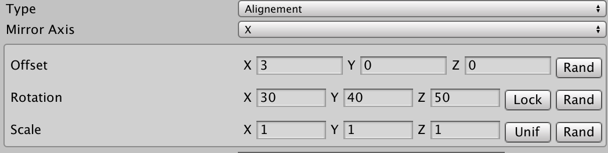 |
| Offset | Translate the procedural calculated meshes. |
| Rotation | Rotate the procedural calculated meshes. Lock : Used to lock the rotation, the meshes will follow the spline rotation data on the Z axis only ps:This can be used in Alignment mode only, Lock Off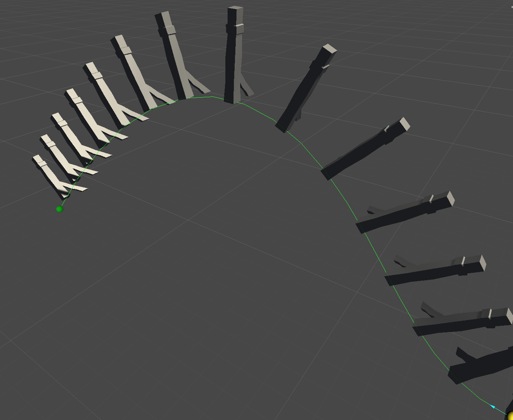 Lock On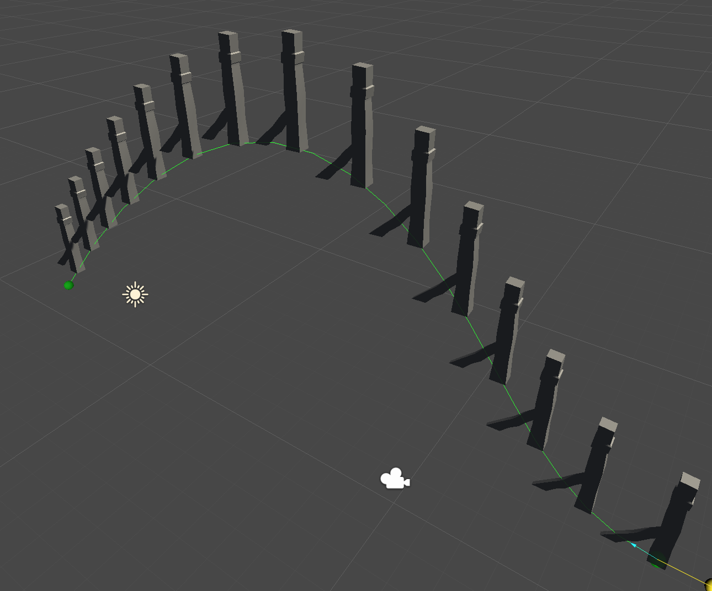 |
| Scale | Scale the procedural calculated meshes Unif set it to On in case you want to scale the procedural calculated meshes on all 3 axes all at once, set it to Off in case you want to scale on separate axis, |
| Rand | Used to create a random Offset, Rotation or Scale behaviour Once Rand is set to On then new Offset , Rotation or Scale fields appear , the randomization will be done between the two fields values.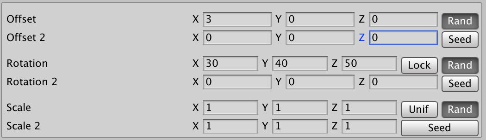 |
| Seed | Used to change the randomization seed |
| Tiling | Used to define how many times you want the mesh to be repeated along the spline. |
| Auto tiling | This calculates automatically how many meshes from the selected prefab mesh fits into the spline branch while taking into consideration the spacing value. |
| Spacing | Used to control the space between the meshes of the prefab mesh. |
| Linked/ Unlinked | This links the spacing of all the other prefab meshes to the currently selected prefab mesh,This helps you move prefab meshes all at once instead of going through them one by one |
| Placement | Used to offset the meshes on the spline branch direction.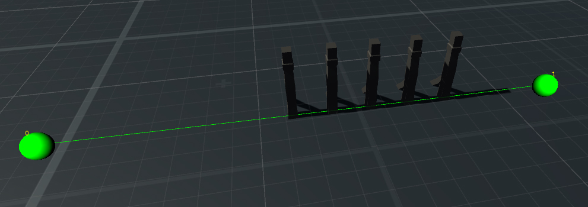 |
Shared
Shared settings between branches and prefab meshes.
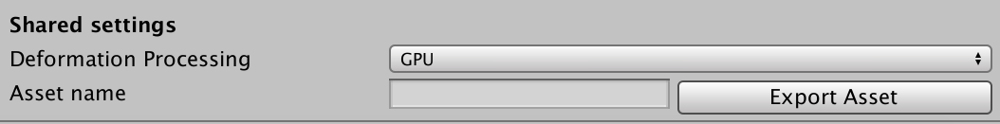
| Variables | Description |
|---|---|
| Deformation processing | The processing method used for the deformed mesh calculation ,There are 3 options available, GPU , CPU Multi threaded, CPU Single threaded 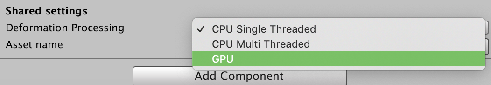 |
| Export | Export mesh to an asset file , the file can be found in "Assets/SMDExport" |